쇼케이스 이용 및 관리
중고쇼케이스 신품쇼케이스 차이, 업종별로 갈리는 지점
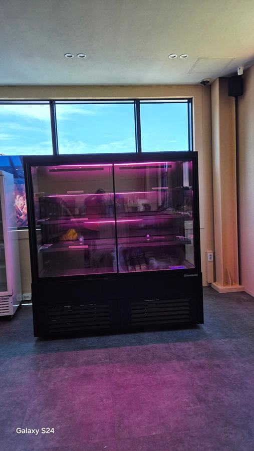
중고쇼케이스와 신품쇼케이스의 가장 큰 차이는 냉각 시스템이 얼마나 안정적으로 온도를 지키는지, 그리고 내 매장 크기에 맞는지입니다. 문을 자주 여닫는 정육·반찬 매장은 신품이 유리하고, 보관 위주 매장이라면 패킹과 단열이 좋은 중고도 검토해 볼 만합니다.
안녕하세요. 업소용 냉장 쇼케이스를 직접 제작하는 한성쇼케이스입니다.
창업이나 매장 리뉴얼을 준비하면서 쇼케이스 견적을 받아 보면, 중고 매물과 신품 사이에서 한 번쯤 고민하게 됩니다.
냉장 진열 설비는 단가가 높은 편이라 중고가 먼저 눈에 들어오는 게 당연하죠.
그런데 겉으로는 깨끗해 보이던 중고 장비를 들였다가 냉각 불량이나 잦은 고장으로 결국 새 설비를 한 번 더 사는 경우도 적지 않습니다.
반대로 모든 매장에 신품이 꼭 필요한 것도 아닙니다.
오늘은 중고쇼케이스와 신품쇼케이스가 실제로 어디서 갈리는지, 업종별로 어느 쪽이 맞는지 판단하는 기준을 정리해 드리겠습니다.
1. 냉각 시스템의 안정성
쇼케이스는 외관보다 안쪽 냉각 구조가 훨씬 중요합니다. 신품은 냉동기, 팬 모터, 배관이 모두 새 부품이라 설계된 대로 온도를 유지합니다.
중고는 같은 모델이라도 이전 매장에서 얼마나 오래, 어떤 환경에서 돌았는지에 따라 상태가 제각각입니다.
상태가 좋은 장비는 문을 닫은 뒤 내부 온도가 일정하게 유지되고 성에가 한쪽에 뭉치지 않습니다. 반대로 지친 장비는 한쪽은 얼고 다른 쪽은 물이 떨어지는 식으로 편차가 생겨 식재료 보관 기간이 짧아지고 전력도 더 씁니다.
- 문을 닫은 뒤 콤프가 지나치게 자주 켜지는지 보세요.
- 내부 벽에 성에와 물방울이 동시에 보이는지 확인하세요.
- 뒷면 열 배출 그릴이 휘거나 심하게 오염됐는지 보세요.
2. 업종에 따라 달라지는 판단
정육점이나 반찬가게처럼 하루에 문을 수십 번 여닫는 업종은 온도가 다시 내려오는 속도가 중요합니다. 복원이 느린 중고 장비는 온도를 맞추려고 계속 강하게 돌아가면서 전기요금과 고장 위험이 함께 올라갑니다.
이런 업종은 신품 쪽이 결과적으로 부담이 덜한 경우가 많습니다.
창고형 보관 위주 매장이라면 이야기가 다릅니다. 외관 흠집보다 도어 패킹 밀착과 단열 상태가 좋은지가 핵심이라, 이 두 가지가 확실한 중고라면 검토해 볼 만합니다.
카페나 디저트 매장처럼 손님 눈앞에 놓이는 장비는 전면 유리의 투명도와 조명 상태, 소음까지 봐야 합니다.
작은 장비라도 소음이 크면 매장 분위기를 해칩니다.
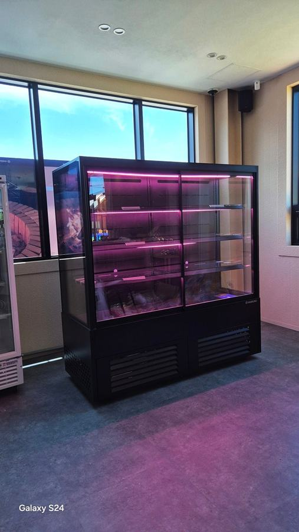
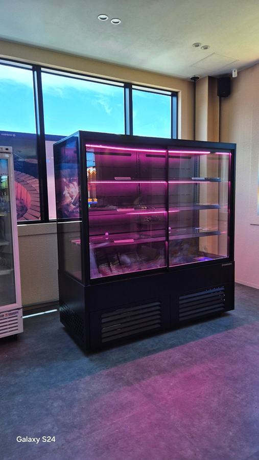
3. 크기와 디자인 맞춤
중고는 이전 매장에 맞춰진 크기와 색상을 그대로 받아야 합니다. 내 매장 자리와 맞지 않으면 틈이 남거나 통로가 좁아지고, 인테리어와 색이 따로 놀 수 있습니다.
신품, 특히 맞춤 제작은 설치 자리와 진열 상품, 매장 콘셉트에 맞춰 규격과 마감을 정할 수 있다는 점이 가장 큰 차이입니다.
4. 판매처와 사후 관리
중고는 제품 상태만큼 누가 어떻게 다뤄 왔는지가 중요합니다. 점검과 청소, 부품 교체를 거쳐 판매하는지, 온도·결로·소음을 실제로 시험한 뒤 내보내는지, 설치 후 초기 문제에 대한 A/S 범위가 분명한지 물어보세요.
신품은 제조사 A/S를 바로 받을 수 있다는 점이 차이를 만듭니다. 지방 매장이라면 가까운 곳에 A/S 센터가 있는지도 함께 확인해 두세요.
- 정비 절차를 거친 제품인지 물어보세요.
- 설치 후 A/S 범위를 문서로 받아 두세요.
체크리스트
- 냉각 장치 소리와 내부 팬 회전 상태
- 성에·물방울 편차와 열 배출 그릴
- 업종별 문 여닫는 빈도
- 설치 자리 치수와 인테리어 색상
- 판매처 정비 절차와 A/S 범위
현장에서 자주 보는 경우: 겉만 깨끗한 중고를 들였을 때
초기 창업이나 리뉴얼 때 비용을 아끼려고 중고 장비를 먼저 알아보시는 대표님이 많습니다. 그런데 외관 스크래치만 보고 들였다가 냉각 불량으로 다시 상담을 주시는 경우가 적지 않습니다.
이런 장비를 보면 콤프 소리가 유난히 크거나 팬에서 고르지 않은 소리가 나는 등, 베어링 마모나 내부 부품 손상을 의심할 만한 신호가 미리 있었던 경우가 많았습니다.
그래서 중고를 보실 때는 냉기가 되는지 안 되는지가 아니라 얼마나 안정적으로 유지되는지를 확인하시라고 권해 드립니다.
업종과 동선, 설치 위치에 따라 중고에 기대할 역할을 먼저 정리해 두시면 어디까지 허용할지 판단하기 쉬워집니다.
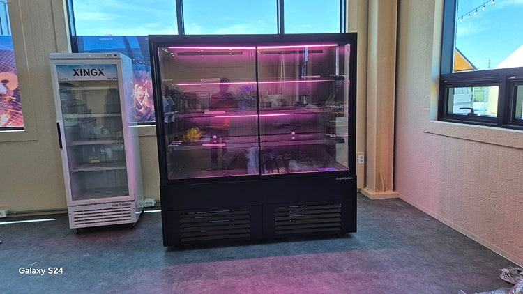
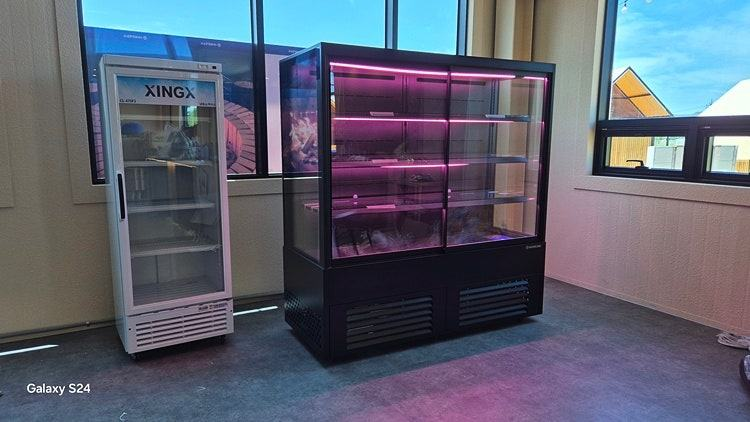
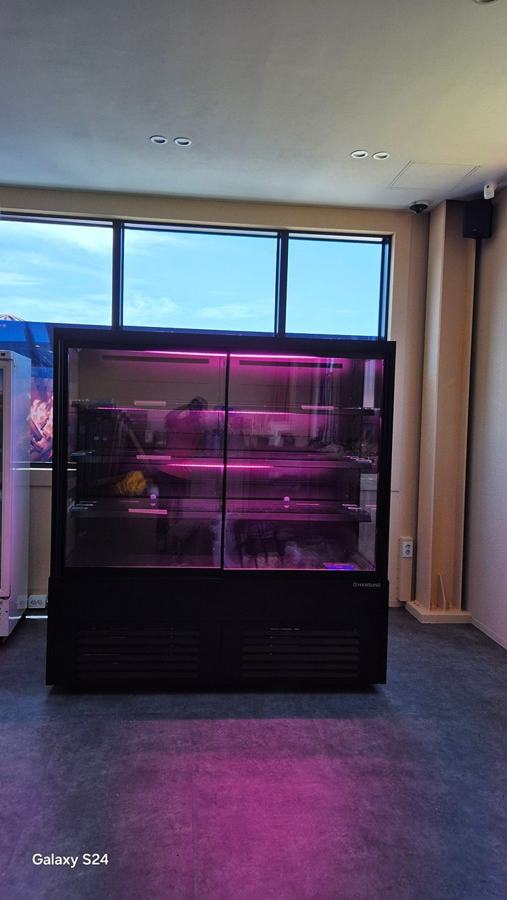
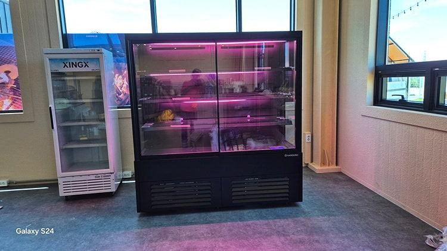
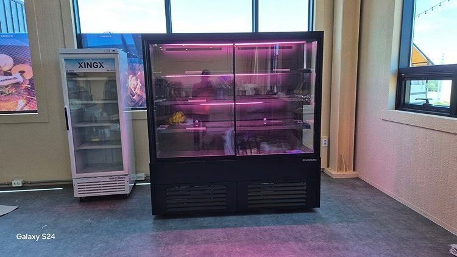
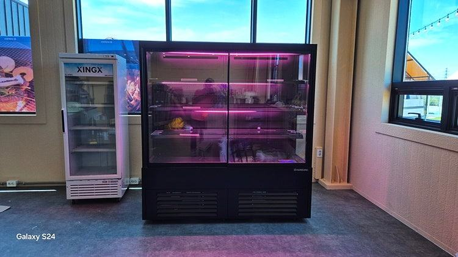
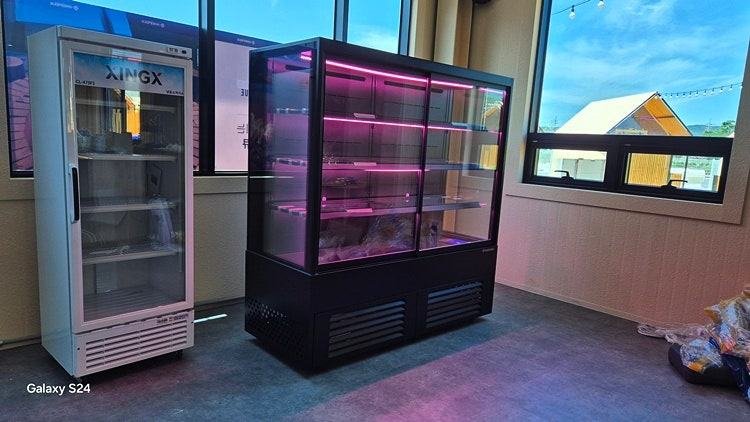
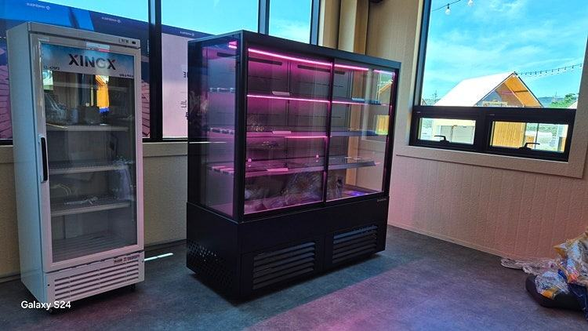
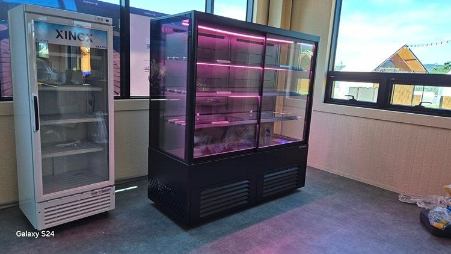

자주 묻는 질문
중고쇼케이스를 볼 때 가장 먼저 확인할 것은 무엇인가요?
냉각 시스템입니다. 전원을 켜고 온도가 내려가는 모습, 콤프와 팬 소리, 성에가 고르게 끼는지를 먼저 보시고 외관은 그다음에 보세요.
어떤 업종이면 신품이 낫나요?
정육점, 반찬가게처럼 문을 자주 여닫고 온도에 예민한 상품을 다루는 업종은 신품이 유리합니다. 손님 눈앞에 놓이는 카페 진열장도 유리 투명도와 소음 때문에 신품을 권하는 경우가 많습니다.
신품을 맞추면 A/S는 어떻게 받나요?
한성쇼케이스는 전국 240여 개 A/S 센터를 운영하고 있어 지역 매장도 가까운 센터에서 대응합니다.
대표전화 031-986-2458로 접수하시면 됩니다.
매장 조건에 맞춰 만드는 한성쇼케이스
원하시는 제품 사진과 설치할 공간 사진만 보내 주셔도 매장에 맞는 구성을 추천해 드립니다.
- 전국 240여 개 A/S 전담 센터 운영
- 본사 대량 자재 매입으로 품질 대비 합리적인 가격
- 유럽제·삼성 냉각 콤프레셔 적용
- 국내 최초 쇼케이스 전문 디자이너 상주
매장 폭과 원하는 진열 구성을 알려 주세요. 실측과 견적을 안내해 드립니다.
031-986-2458